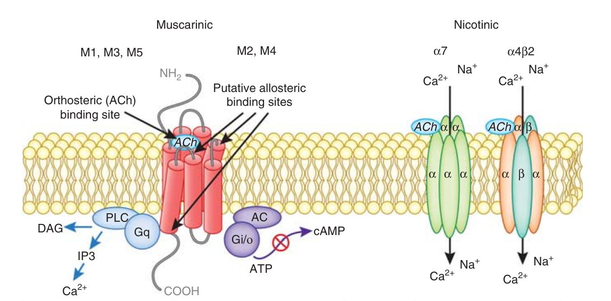
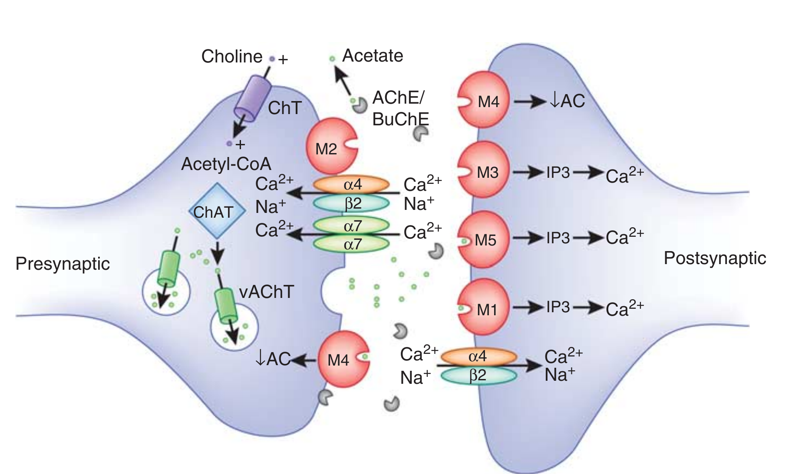

Cholinergic Antagonists
Hao Chen
July 23 2018
# Cholinergic Antagonists
Dr. Hao Chen
Dept. Pharmacology, UTHSC
hchen@uthsc.edu
URL: http://chen42.github.io/talks/cho_at.html
Sept 5, 2017 (10 AM – 12 PM)
Conventions
used in this document
- Color and style theme:
- Drug name: Enfuvirtide
- Links: Clinicalkey.
- You need to login via your UTHSC netid when off campus to use e-textbooks.
- VPN provides a better experience.
- Printable version
- Open link in a new browser tab:
CTRL click
<- or ->
Space_bar
Page_down or Page_up
Home or End
CTRL + or CTRL -
CTRL mouse_wheel_up or CTRL mouse_wheel_down
Written using Reveal.js and markdown
Textbook chapters used
Cholinoceptor-Blocking Drugs Katzung and Trevor, Basic & Clinical Pharmacology, 13e
Acetylcholine Receptor Agonists Brenner and Stevens, Pharmacology, 4e.
Supplemental materials: Drug Monographs, PubMed articles
Learning Objectives
- Describe classes of anticholinergics.
- Describe effects of anticholinergics on organ systems.
- Describe therapeutic uses of anticholinergics.
- Explain the rationale for the therapeutic use of muscarinic antagonists in diseases such as bronchoconstriction, excessive salivation, and motion sickness.
- Explain the rationale for the therapeutic use to produce mydriasis and cycloplegia.
Learning Objectives
- Describe side effects and drug interactions of anticholinergics.
- Explain why muscarinic antagonists cause xerostomia, blurred vision, photophobia, tachycardia, anhidrosis, difficulty in micturition, hyperthermia, glaucoma and mental confusion in the elderly.
- Explain why muscarinic antagonists are contraindicated in glaucoma, obstructive disease of the gastrointestinal tract or urinary tract, intestinal atony.
- List the adverse effects of drug acting at autonomic ganglia.
- Describe the use of neuromuscular blockers in general anesthesia
- Explain the selection criterior of neuromuscular blockers
- Explain the cause of hyperkalemia and malignant hyperthermia
- Describe the principles of treating cholinergic poisoning
Drug List
|
Muscarinic Antagonists
Atropine
Cyclopentolate (Cyclogyl)
Darifenacin (Enablex)
Dicyclomine (Bentyl)
Glycopyrrolate (Robinul)
Hyoscyamine (Anaspaz)
Ipratropium (Atrovent)
Methscopolamine (Pamine)
Oxybutynin (Ditropan)
Scopolamine
Solifenacin (Vesicare)
Tiotropium (Spiriva)
Tolterodine (Detrol)
Tropicamide (Mydriacyl Ophthalmic)
Trospium (Spasmex)
|
Ganglionic Blockers
Hexamethonium
Mecamylamine (Inversine)
Tetraethylammonium
Neuromuscular Blockers
Atracurium (Tracrium) Cisatracurium (Nimbex) Pancuronium (Pavulon) Rocuronium (Zemuron) Succinylcholine (Anectine, Quelicin) Vecuronium (Norcuron)
|
outline
-
Cholinoreceptors
-
Antimuscarinic
-
Organ System Drug Effects
-
Atropine / Scopolamine
-
Synthetic Antimuscarinics
-
Antinicotinic
-
Nicotinic Ganglionic Blockers
-
Nicotinic Neuromuscular Blokers
-
Cholinergic Poisoning
Sites of drug actions

Cholinergic receptors

Each mAChR subtype is a seven-transmembrane protein, which belongs to two major functional classes based on G-protein coupling. The M1, M3, and M5 mAChRs selectively couple to the Gq/G11-type G-proteins resulting in the generation of inositol-1,4,5-trisphosphate (IP3) and 1,2-diacylglycerol (DAG) through activation of the phosphoinositide-specific phospholipase-Cβ leading to increased intracellular calcium levels. The M2 and M4 mAChRs preferentially activate Gi/Go-type G-proteins, thereby inhibiting adenylate cyclase, reducing intracellular concentration of cAMP, and prolonging potassium channel opening. Neuronal nAChRs are pentameric ligand-gated ion channels. The most abundant neuronal subunits are α4, β2, and α7, with the heteromeric α4β2 receptor subtype in highest abundance.
mAChR subtypes
 The M2 and M4 mAChRs serve as autoreceptors on cholinergic terminals to suppress ACh release at select synapses in the CNS (left neuron). The mAChRs located on non-cholinergic neurons act as heteroceptors controlling the release of other neurotransmitters, such as Dopamine. (not draw) M1, M3, M5, but also M4 mAChRs that are located postsynaptically facilitate slow cholinergic synaptic neurotransmission relative to nAChR subtypes. The alpha7 and alpha4beta2 nAChR subtypes mediate fast synaptic transmission and also use-dependent changes required for neuronal plasticity. These nAChR subtypes can have both pre- and postsynaptic localization.
// Note: The endogenous ligand of these cholinergic receptors, ACh, is synthesized in cholinergic neurons (left neuron) by the enzyme ChAT through the transfer of acetyl-CoA onto choline. Choline uptake is mediated by presynaptic high-affinity choline transporters (ChT). After synthesis, ACh is packaged into synaptic vesicles by the vesicular ACh transporter (vAChT). After neuronal activation-mediated release into the synaptic cleft, ACh can bind to pre- and postsynaptic receptors, or it can be inactivated through hydrolysis by the AChE enzymes, a process that can be inhibited by different substances (eg, organophosphates, AChE inhibitors) to increase synaptic ACh levels. Once ACh is hydrolyzed, choline is transported through the ChTs into the presynaptic terminal, where it is again synthesized into ACh.
cholinergic receptor subtypes
|
TYPE OF RECEPTOR
|
PRINCIPAL LOCATIONS
|
MECHANISM OF SIGNAL TRANSDUCTION
|
EFFECTS
|
|
Muscarinic
|
|
M 1
|
Autonomic ganglia, presynaptic nerve terminals, and CNS
|
Increased IP 3
|
Modulation of neurotransmission
|
|
M 2
|
Cardiac tissue (sinoatrial and atrioventricular nodes)
|
Increased potassium efflux or decreased cAMP
|
Slowing of heart rate and conduction
|
|
M 3
|
Smooth muscle and glands
|
Increased IP 3 Contraction of smooth muscles and stimulation of glandular secretions
|
Vascular smooth muscle Increased cGMP as a result of nitric oxide stimulation Vasodilation
|
|
Nicotinic
|
|
Muscle type
|
Neuromuscular junctions
|
Increased sodium influx
|
Muscle contraction
|
|
Ganglionic type
|
Autonomic ganglia
|
Increased sodium influx
|
Neuronal excitation
|
|
CNS type
|
CNS
|
Increased sodium influx
|
Neuronal excitation
|
cAMP, cyclic adenosine monophosphate; cGMP, cyclic guanosine monophosphate; CNS, central nervous system; IP 3 , inositol triphosphate Pharmacology 4e
Major Groups of cholinergic blockers
antimuscarinic = parasympatholytic
- Muscarinic Receptor Antagonists
- Belladonna Alkaloids
- Atropine, scopolamine, Hyoscyamine
- Semisynthetic and Synthetic Muscarinic Receptor Antagonists
- hundreds available
- Dicyclomine, Glycopyrrolate, Ipratropium, Oxybutynin, Tropicamide
- Nicotinic Receptor Antagonists
- Neuromuscular Blocking Agents
- Nondepolarizing Neuromuscular Blocking Agents
- Rocuronium, Cisatracurium, Pancuronium
- Depolarizing Neuromuscular Blocking Agents
Antimuscarinics: Structure

|
The structure of atropine (oxygen [red] at [1] is missing) or scopolamine (oxygen present). In homatropine, the hydroxymethyl at [2] is replaced by a hydroxyl group, and the oxygen at [1] is absent.
|
Antimuscarinics: ADME
- Absorption
- tertiary antimuscarinic drugs are well absorbed
- quaternary antimuscarinic drugs are not well absorbed organic chemistry
- Distribution
- tertiary antimuscarinics are widely distributed in the body.
- Significant levels are achieved in the CNS within 30 minutes to 1 hour.
- quaternary derivatives are poorly taken up by the brain and therefore are relatively free of CNS effects.
- Metabolism
- the elimination of atropine from the blood occurs in two phases: the t1/2 of the rapid phase is 2 hours and that of the slow phase is approximately 13 hours.
- Effect on parasympathetic function declines rapidly in all organs except the eye, where it can persist for > 72 hours.
- Excretion
- About 50% of the dose is excreted unchanged in the urine. The rest appears in the urine as hydrolysis and conjugation products.
antimuscarinics: MoA
-
reversible blockade of muscarinic receptor
-
representative drug: atropine
-
can be overcome by ACh or cholinomimetics
-
binds to the aspartate in the third transmembrane segment of the heptahelical receptor
-
prevents the release of IPs and inhibits adenylyl cyclase (inverse agonists)
-
sensitivity: salivary, bronchial, sweat glands >> gastric parietal cells
-
sensitivity: exogenously administered >> ACh
-
receptor subtype selectivity
-
Atropine non-selelctive
-
other: moderately selective on mAChRs
-
synetic antimuscarinics may interact with nAChR or histamine receptors
</ul>
|

Nature Reviews Drug Discovery 13, 549-560 (2014)
|
Antimuscarinics: Organ System Effects
Central nervous system
Compare with indirect cholinergic angonists
- sedative effects, drowsiness, amnesia: Atropine, scopolamine
- initial effect is mild stimulation
- reduce Parkinsons tremor: atropine
- motion sickness (vestibular disturbance): Scopolamine
- high dose cause an acute confusional state known as delirium, which can be reversed by Physostigmine(Antilirium)
Antimuscarinics: Organ System Effects
Eye
Compare with cholinomimetics
-
reduce lacrimal secretion (“sandy” eyes)
-
Belladonna (Italian, “beautiful lady”)
-
mydriasis
-
remove parasympathetic opposition to the sympathetic system in the iris
-
cycloplegia
-
ciliary muscle fail to contract
-
inability to accomondate (i.e. focus on near objects)
-
cause acute close angle glaucoma
|

|
Antimuscarinics: Organ System Effects
Cardiac system
Compare with cholinomimetics
- sinoatril and atrioventricular node
- blocking the effects of the vagus nerve
- tachycardia, increase conduction velocity
- low dose i.v. administration results in initial bradycardia
- due to block of prejunctiona M1 auto-receptors
- stimulation of the vagal motor nucleus in the brain stem.
- reduce PR interval of the ECG
Antimuscarinics: Organ System Effects
Vascular system
Compare with cholinomimetics
- most blood vessels receive no direct innervation from the parasympatholytic system
- except those in the thoracic and abdominal viscera
- almost all vessles contain endothelia muscarinic receptors → vasodilation
- blocked by antimuscarinic drugs
// ### net cardiovascular effect of atropine * in patients with normal hemodynamics * no dramatic effect, tachycardia may occur, but little effect on blood pressure * prevent the cardiovascular effect of direct-activing muscarinic agonits
Antimuscarinics: Organ System Effects
Respiratory system
Compare with cholinomimetics
-
potent inhibitors of secretions in the upper and lower respiratory tract.
-
bronchial smooth muscle relaxation and bronchodilation
-
used before inhalant anesthetics to reduce trachea secretion
-
chronic obstructive pulmonary disease (COPD)
In COPD, the small airways are narrowed through thickening of the bronchiolar periphery wall by inflammation and fixed narrowing as a result of fibrosis, disruption of alveolar attachments as a result of emphysema and luminal occlusion by mucus and inflammatory exudate.
|

|
COPD review
Antimuscarinics: Organ System Effects
Gastrointestinal tract
Compare with cholinomimetics
- dry mouth is a common side effect
- gastric secretion is not as effectively blocked because other neurotransmitters are involved.
- gastrointestinal smooth muscle mobility is affected
- from stomach to colon
- diminish the tone and propulsive movement
- relax viscera wall, prolong gastric emptying time.
- stop diarrhea caused by cholinomimetics.
Antimuscarinics: Organ System Effects
Genitourinary tract
Compare with cholinomimetics
- relaxes smooth muscle of the ureters and bladder ball.
- treating spasm induced by mild inflammation or surgery.
- can precipitate urinary retention
Antimuscarinics: Organ System Effects
Sweat glands
- suppresses thermoregulatory sweating.
- body temperature increase when large dose of Antimuscarinics is given
- “Atropine” fever in infants and children
Atropine, Scopolamine
Cardiac Indications
- sinus bradycardia with reduced cardiac output and hypotension or ischemia.
- sometimes occurs after a myocardial infarction.
- i.v. Atropine
- symptomatic atrioventricular blocking
- primary use of atropine
Atropine, Scopolamine
Ocular Indications
- localized application to produce mydriasis
- facilitate ophthalmoscopic examination of the peripheral retina
- effect of atropine, scopolamine can last for days
- they bind to pigments in the iris that slowly release the drugs. People with darker irises bind more atropine and experience a more prolonged effect than do people with lighter irises.
- to produce cycloplegia and permit the accurate determination of refractive errors
- cyclopentolate is preferred for inducing cycloplegia and mydriasis (rapid onset of action, lasting a day) for diagnostic purpose.
- should be only used when both mydriasis and cycloplegia or prolonged action is required
- short-lasting mydriasis can be induced by phenylephrine , which does not induce cycloplegia.
- reduce muscle spasm and pain caused by inflammation
- treat iritis and cyclitis (inflammation of the iris and ciliary muscles) associated with infection, trauma, or surgery.
- long-lasting effects are valuable
Atropine, Scopolamine
Respiratory Tract Indications
- no longer used for bronchodilation because of its many adverse effects.
- e.g., impairs ciliary activity, reducing the clearance of mucus from the lungs and causing accumulation of viscid material in the airways.
- ipratropium is preferred
- to reduce salivary and respiratory secretions, prevent airway obstruction in patients who are receiving general anesthetics.
- scopolamine may cause amnesia associated with surgery
- Glycopyrrolate is mostly used for this purpose
Atropine, Scopolamine
Gastrointestinal and urinary tract Indications
Atropine, Scopolamine
central nervous system indications
- motion sickness
- A transdermal formulation of scopolamine can be used to prevent motion sickness.
- blocking acetylcholine neurotransmission from the vestibular apparatus to the vomiting center in the brain stem.
- used in the treatment of Parkinson disease.
- adjunctive therapy with adverse effects
- better drugs available
Atropine, Scopolamine
Toxicity
Atropine toxicity: “dry as a bone, blind as a bat, red as a beet, and mad as a hatter.”
Treatment: 1. activated charcoal. 2. Physostigmine (a tertiary amine with CNS effects)
Other Muscarinic Receptor Antagonists
the pharmacologic effects of these agents are similar to those of atropine, their unique pharmacokinetic properties are advantageous in specific situations.
Tropicamide, cyclopentolate
Eye
- synthetic drugs
- topical ocular administration as a mydriatic.
- given before ophthalmoscopy to facilitate examination of the peripheral retina.
- cyclopentolate produces maximum mydriatic and cycloplegic effects within 15-60 minutes. The duration of both effects is normally 24 hours. Mydriasis may persist for several days in selected patients.
- tropicamide has a short duration of action (about 1 hour) and is often preferable for short-term mydriasis.
There is no statistically significant difference between cyclopentolate and tropicamide for either cycloplegic retinoscopy or distance subjective refraction. Optom Vis Sci. 1993 Dec;70(12):1019-26.
// tropicamide is not as effective as cyclopentolate in inhibiting accommodation.
Ipratropium, Tiotropium
respiratory tract
- ADME and MoA
- quaternary amine derivatives of atropine, structurally similar
- not well absorbed from the lungs into the systemic circulation,
- administered by inhalation to patients with obstructive lung diseases.
- main difference is duration of action.
- Tiotropium once daily dosing
- ipratropium requires four times daily dosing
- Indications
- Ipratropium is a first line drug for patients with mild stable COPD, and a second line drug for exercise-induced bronchospasm
- Tiotropium may be used in all groups of COPD patients with varying symptoms and risks of exacerbations as monotherapy.
- Tiotropium is the first long-acting anticholinergic agent to be approved for long-term asthma maintenance therapy in the US.
- Ipratropium and Tiotropium are often combined with beta-agonist treatments during severe, acute asthma exacerbations.
Dicyclomine
GI tract
- ADME
- synthetic tertiary amine
- MoA unclear, likely exert a nonspecific, local, direct musculotropic action on the smooth muscle of the GI tract
- excreted in urine
- elimination half-life: 9-10 h
- Indications
- relieve irritable bowel symptoms, such as intestinal cramping.
- Adverse effects
- does not produce characteristic atropine-like effects on the salivary or sweat glands, or on the cardiovascular system.
- not used in infants
Pirenzepine
GI tract
- selective for M1 receptors
- reduce vagally stimulated gastric acid secretion in patients with peptic ulcers.
- it blocks M1 receptors on paracrine cells and inhibits the release of histamine, a potent gastric acid stimulant.
- Pirenzepine is available in Canada and Europe but not in the United States.
solifenacin, darifenacin, tolterodin
Urinary tract
- ADME
- competitive M3 muscarinic antagonist.
- solifenacin and tolterodin are not selective. darifenacin has a greater affinity for the M3 receptor than for other known muscarinic receptors
- tolterodine very low lipophilicity, greatly limits CNS effect
- solifenacin is primarily metabolized by CYP3A4. darifenacin is metabolized by both CYP3A4 and CYP2D6 tolterodine is primarily metabolized by CYP2D6
- Indications
- reduce the four major symptoms of overactive bladder: daytime urinary frequency, nocturia (frequent urination at night), urgency, and incontinence.
- tolterodine is preferred in the geriatric population
Nicotinic Receptor Antagonists
Ganglionic Blocking Agents
- Characteristics
- reduce excessive activity of the sympathetic or parasympathetic nervous system,
- lack selectivity for sympathetic or parasympathetic ganglia
- have numerous adverse effects
- rarely used clinically but still useful for preclinical research
- All synthetic amines
- Mecamylamine
- a secondary amine, better GI track absorption, has CNS effects
- Hexamethonium
- Tetraethylammonium
Nicotinic Receptor Antagonists
Neuromuscular Blocking Agents
- MoA
- neuromuscular blocking agents = paralytics = muscle relaxants
- bind to the muscle type of nicotinic acetylcholine receptor
- inhibit neurotransmission at skeletal neuromuscular junctions
- causing muscle weakness and paralysis.
Nicotinic Receptor Antagonists
Neuromuscular Blocking Agents
- nondepolarizing blockers
- competitive antagonists at the neuromuscular junction
- depolarizing blocker
- can produce complete respiratory failure

Nicotinic Receptor Antagonists ## Nondepolarizing Neuromuscular Blocking Agents ### Chemistry and Pharmacokinetics
|
Drug
|
Depolarizing Agent
|
HISTAMINE RELEASE
|
GANGLIONIC BLOCKADE
|
Effects Reversed by Cholinesterase Inhibitors
|
Duration of Action (Minutes)
|
Routes of Elimination
|
|
Succinylcholine
|
Yes
|
Minimal
|
None
|
No
|
Short (5-10)
|
Plasma (butyryl) cholinesterase
|
|
Atracurium
|
No
|
Varies
|
Low
|
Yes
|
Intermediate (30-60)
|
Plasma esterase
|
|
Cisatracurium
|
No
|
None
|
Low
|
Yes
|
Intermediate (30-60)
|
Spontaneous chemical degradation
|
|
Pancuronium
|
No
|
None
|
Medium
|
Yes
|
Long (60-120)
|
Renal excretion
|
|
Rocuronium
|
No
|
None
|
Low
|
Yes
|
Intermediate (30-60)
|
Biliary and renal excretion
|
|
Vecuronium
|
No
|
None
|
Low
|
Yes
|
Intermediate (30-60)
|
Biliary and renal excretion and hepatic metabolism
|
Nicotinic Receptor Antagonists ## Nondepolarizing Neuromuscular Blocking Agents ### ADME * curariform drugs: atracurium, cisatracurium, pancuronium, rocuronium, and vecuronium . * tubocurarine , was extracted from plants used by native South Americans as arrow poisons for hunting wild game. * The curariform drugs are not well absorbed from the gut. * administered only by the intravenous route. * most eliminated by renal and biliary excretion of the unchanged compounds * or hepatic metabolites * most of the isomers of atracurium are hydrolyzed by plasma esterases. * cisatracurium spontaneously decomposes by nonenzymatic chemical degradation. * preferred paralytic agent for critically ill patients with impaired hepatic and renal function. * In patients with normal renal and hepatic function, atracurium and cisatracurium have an intermediate duration of action comparable to that of vecuronium and rocuronium.
Nicotinic Receptor Antagonists ## Nondepolarizing Neuromuscular Blocking Agents ### Indications
- primarily used to induce muscle relaxation during surgery.
- used as an adjunct to electroconvulsive therapy to prevent injuries that might be caused by involuntary muscle contractions.
- facilitate intubation of the respiratory tract.
Nicotinic Receptor Antagonists ## Nondepolarizing Neuromuscular Blocking Agents ### Adverse effects
Nicotinic Receptor Antagonists ## Nondepolarizing Neuromuscular Blocking Agents ### Interactions
muscle-relaxing effects are potentiated by volatile inhalational anesthetic agents (e.g., sevoflurane ) and by the aminoglycoside antibiotics, tetracycline antibiotics, and calcium channel blockers.
effects is more pronounced in myasthenia gravis patients.
Nicotinic Receptor Antagonists ## Depolarizing Neuromuscular Blocking Agents ### Succinylcholine
-
Interactions and adverse effects
-
can cause hyperkalemia → cardiac arrest
-
avoid third-degree burn patients, prolonged chemical denervation (e.g. muscle relaxant), direct muscle trauma
-
these conditions increase muscle nAChR, including α7 homomer
-
muscle cells do express α7 nAChR. These receptors do not desensitize.
-
choline (metabolite of Ach and Succinylcholine) is a full agonist for muscle α7
-
activation of α7 increases K+ outflow
|

|
Anesthesiology 1 2006, Vol.104, 158-169
Nicotinic Receptor Antagonists ## Depolarizing Neuromuscular Blocking Agents ### Succinylcholine
- Interactions and adverse effects
- malignant hyperthermia: pharmacogenetic disorder of skeletal muscle that presents as a hypermetabolic response to anesthetic gases or Succinylcholine
- The classic signs of MH include hyperthermia, tachycardia, tachypnea, increased carbon dioxide production, increased oxygen consumption, acidosis, hyperkalaemia, muscle rigidity, and rhabdomyolysis, all related to a hypermetabolic response.
- In most cases, the syndrome is caused by a defect in the ryanodine receptor.
- Likely fatal if untreated. Mortality has decreased from 80 % thirty years ago to <5 % in 2006.
- Dantrolene is a specific treatment for MH.
Cholinergic Poisoning
types of cholinergic poisoning
- cholinesterase inhibitor insecticides
- chemical warfare
- eating wild mushrooms
Cholinergic Poisoning
treatment
- no treatment for nicotinic effect
- agonists and antagonists cause blockage of transmission (receptor desensitization)
- antimusacrinic therapy
- muscarinic effect can be blocked by a tertiary amine
- atropine is the preferred drug
- both peripheral and CNS effects
- AChE inhibition can lasting for more then 24 or 48 h
- need large dose, need to give several times
- dosage must be titrated to the patient’s response.
- cholinesterase regenerator
- pretreatment
- use intermediate-acting enzyme inhibitors to prevent binding of the much longer-acting inhibitor
- pyridostigmine
Cholinergic Poisoning
Mushroom poisoning
- rapid-onset
- apparent 1/2 - 2 h after ingestion
- can be caused by a variety of toxins
- some have muscarinc signs (nausea, vomiting, diarrhea, urinary urgency, sweating, salivation, and sometimes bronchoconstriction)
- some will have antimuscarinic signs (atropine poisoning)
- delayed-onset
- first manifestation 6 - 12 h after ingestion
- initially nausea and vomiting
- major toxicity involves hepatic and renal cellular injury by amatoxins that inhibit RNA polymerase.
Summary of Important Points
- Muscarinic acetylcholine receptor antagonists relax smooth muscle, increase heart rate and cardiac conduction, and inhibit exocrine gland secretion. They include belladonna alkaloids (e.g., atropine and scopolamine) and semisynthetic and synthetic drugs (e.g., ipratropium).
- Muscarinic blockers are used to treat bradycardia, obstructive lung diseases, intestinal spasms, and overactive urinary bladder. They are also used to reduce salivary and respiratory secretions and to produce mydriasis and cycloplegia.
- Atropine toxicity can cause dryness of the mouth and skin, blurred vision, tachycardia, palpitations, urinary retention, delirium, and hallucinations.
- Nicotinic acetylcholine receptor antagonists include nondepolarizing neuromuscular blocking agents known as curariform drugs, such as rocuronium and cisatracurium. These drugs are used to produce muscle relaxation during surgery.
- Curariform drugs competitively block nicotinic receptors in skeletal muscle. They do not cause muscle fasciculations, and their effects can be reversed by cholinesterase inhibitors or Sugammadex .
- Succinylcholine is a depolarizing neuromuscular blocking agent with a short duration of action. It produces muscle fasciculations that are followed by muscle paralysis. Its effects are not reversed by cholinesterase inhibitors.

{kind=link}
{kind=link}
{kind=link}
{kind=link}
{kind=link}


{kind=link}